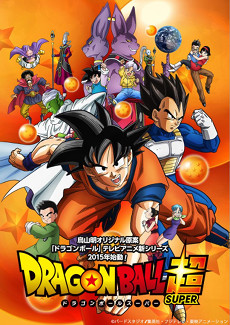

Link útil para assistir animes de forma online e gratuita
Dragon Ball

A série Dragon Ball segue as aventuras
do protagonista, Son Goku, desde sua infância até a idade adulta enquanto
ele treina artes marciais e explora o mundo em busca de sete esferas
conhecidas como as Esferas do Dragão, que convocam um dragão
que concede um desejo quando reunidas.
Naruto
Naruto é um anime baseado no mangá de mesmo nome
escrito por Masashi Kishimoto. A série gira em torno das aventuras vividas
por Naruto Uzumaki, um jovem órfão habitante da Aldeia da Folha que sonha
em se tornar o quinto Hokage, o maior guerreiro e governante da vila.
Demon Slayer
A história de Demon Slayer conta sobre um jovem que ganha
a vida vendendo carvão até descobrir que sua família foi massacrada por um demônio,
restando apenas sua irmã, Nezuko, que foi infectada e está se tornando um monstro.
O protagonista, então, decide virar um caçador de demônios e buscar vingança.